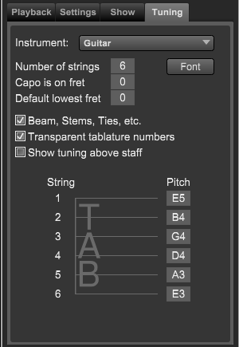

If the Inspector panel is not showing click on the Inspector button at top right of Control Bar or type "Shift-I" to open the panel.
Choosing the Tuning tab opens the tuning and tablature settings.

|
- Instrument - Choose the guitar type from the pop-up menu.
- Number of strings - Sets the number of strings for this instrument.
- Font - Choose the font to use for tablature fret numbers.
- Capo - Sets the starting capo position.
- Default lowest fret. - Sets a limit so that fret positions are always above this number.
- Beams, stem, ties, etc. - Set this if you want these items to be displayed on tablature staves.
- Transparent tablature numbers - Set this true if you do not want the numbers to have a white background.
- Show tuning above staff - Set this if you want to display this tuning above the staff
|
Editing tablature staff notation
You can edit Tablature notes as follows:
- Drag a tablature marking to a new string.
Overture automatically constrains which strings can accommodate a tablature marking. The tablature marking adopts the appropriate fret number to designate the correct pitch using the specified string tuning.
- Control[Cmd]-drag a number to change the fret it references.
Be careful when using this feature because Overture doesn't prevent you from referencing the wrong note.
- Copy, paste, and delete tablature entries.
- Show the duration of the tablature note by selecting a note and choosing Notes>Stem>Show Stem.
Note: Since tab notes can have their durations derived from their source notes in the staff above, deleting the second of two tied notes creates problems if you justify that measure. If you don't want to see the second note, make it invisible